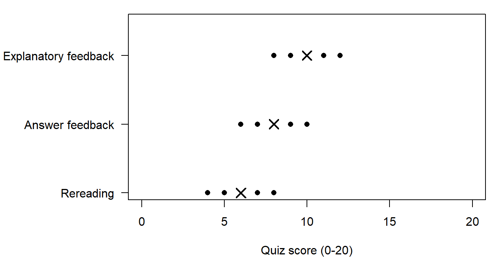
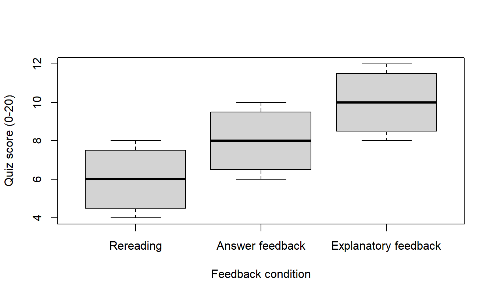
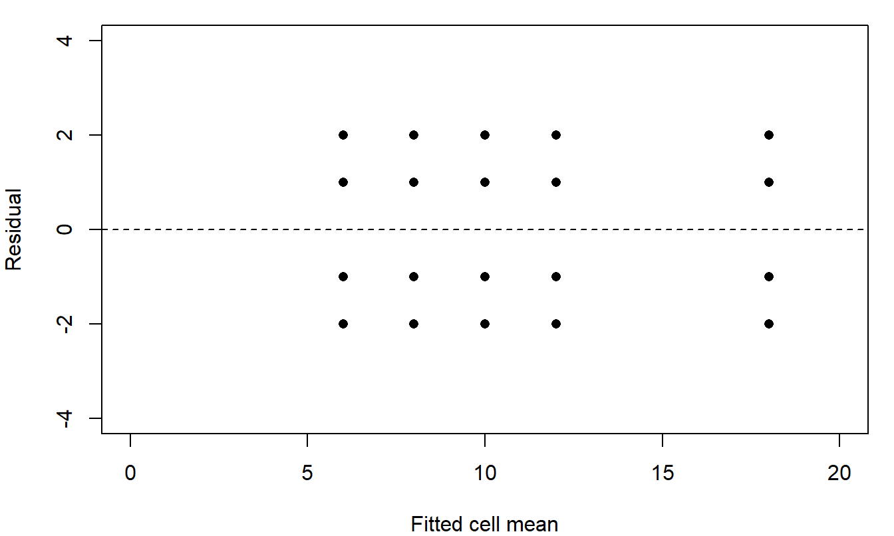

Chapter 4 R support
Base R for group comparisons and a factorial model
Use these examples beside Chapter 4 and its lecture, or adapt their short commands for an exercise, Computer Lab or homework. Computer Lab 4 selects one connected analysis for its final classroom activity round; it does not ask you to work through every section here. This page is reusable support, available before class, and completing it beforehand is not required. Choose one software route: R here, desktop R, or the lab’s SPSS instructions. The lab contains its activity and worked answers.
Everything here uses base R with the standard stats and graphics commands. No package is loaded or installed. Choose Run All to run a complete cell and Start Over to restore its starting code. Every cell repeats the short setup it needs, so any one of them can run on its own in a fresh session. Calculate at full precision and report statistical results to four decimal places; rounded inputs or different software rounding can change the last digits. For keyboard shortcuts and individual commands, see how to run code.
| Your task | Useful starting point |
|---|---|
| New to R, or returning after a break | Before you start |
| Enter or read the 24 quiz scores | The data and a first plot |
| Core Exercises 3-4 or homework 9 | One-way ANOVA |
| A declared comparison, or all pairwise differences | Contrasts and Tukey |
| Computer Lab 4, core Exercises 5-6 or homework 10 | The full factorial model, then the interaction plot and selected comparison |
| Checking the fitted model against its residuals | Residuals from the factorial fit |
| How much variation a source represents | Eta squared for each source |
| Private course data or another complete supplied script | Programming help and your workspace |
Use the task’s own data, model and requested precision. The workspace and the demonstration cells have separate R objects, so copy a whole cell, including its setup, when you move code. Fixed code and output remain readable if the browser R runtime cannot start.
Before you start
A command is one instruction for R, such as mean(feedback_data$score). An object is a named value R keeps for later, such as n. The assignment arrow <- creates one: n <- 24 stores 24 under the name n, and typing n on its own line prints it. c() combines several values into one vector, so c("Massed", "Spaced") holds two labels. A table of records is an object too: feedback_data <- read.csv("data/feedback_practice.csv") reads the 24 records into a table called feedback_data, and factor() with levels = then fixes the order the conditions are listed in. $ takes one named column out of a table: feedback_data$score is the score column. A function is a command that does a job, written with its arguments inside the brackets. In aov(score ~ feedback, data = massed) the formula is the first argument and data = massed is a named one; commas separate them, and text in quotes is a label rather than an object. Names must match exactly, so Score is not score. See how to run code for the buttons and keyboard shortcuts, and for what to do when R reports an error.
The data and a first plot
The invented study gives 24 different Grade 7 students a fractions quiz scored from 0 to 20. Each student appears once, in one of six cells formed by three feedback conditions and two practice schedules, with four students per cell. The data note records the identity of the file and its invented setting.
The 24 records are stored in a CSV file with the columns student, feedback, practice and score. read.csv() reads that file into a data frame. A CSV holds plain text with no order of its own, so the two factor() lines set each factor’s display and model order explicitly; without them R would sort alphabetically and put “Answer feedback” first. head() shows the first six rows, str() reports each column’s type and a factor’s level order, and table() with two factors counts the six cells.
The table has 24 rows and four columns. str() confirms that feedback is a factor with three levels in the declared order and practice a factor with two, and the counted table shows six cells of four students. Every cell on this page repeats these same three setup lines. On desktop R, use read.csv("feedback_practice.csv") with the file beside your script.
The same 24 scores typed in
You do not need the file. Typing the scores keeps the whole record visible, which helps when you want to see exactly what is being analysed, or to change one score and rerun. data.frame() builds the table; rep(..., each = 8) repeats each feedback label eight times and the nested rep() alternates the two schedules in blocks of four. The same two factor() calls fix the level order, written here inside data.frame().
This produces the same 24 records, in the same order, as the CSV, so either starting point can feed the analyses below. The cells that follow all start from the CSV, because that is the shorter setup to repeat.
The Massed subset and every observation
The first comparison uses only the 12 Massed-practice students, so the three feedback conditions are compared under one schedule. subset() keeps the rows matching a condition. table() counts the three groups, and aggregate(score ~ feedback, ...) applies mean within each one; tapply() returns the same three means as a named vector.
There are 12 Massed students, four per group, with means 6.0000, 8.0000 and 10.0000 and the same SD 1.8257 in each group. The means differ by two points per step while the groups overlap.
A dotplot of the 12 scores
stripchart() draws every observation. method = "stack" stacks equal scores so none is hidden, pch chooses the point symbol, las = 1 keeps the group labels horizontal and par(mar = ...) widens the left margin for them. points() then adds the three group means as crosses.
With four scores per group the dots show the data more directly than a summary would. A chart of the three means alone would hide the overlap.
The same subset as boxplots
boxplot(score ~ feedback, ...) draws one box per group. With only four observations per group the box is a coarse summary, so read it beside the dotplot rather than instead of it.
One-way ANOVA
aov() fits the model. In score ~ feedback, ~ separates the outcome from its grouping factor. summary() prints the ANOVA table: a row for the factor and a row for the within-group residuals.
The table gives F(2, 9) = 4.8000 with p = .0381. The null is that the three Massed group means are equal; the alternative is that at least two differ. Under independent observations, equal group error variances and Normal errors, the null ratio has an F(2, 9) reference. This result concerns the 12 invented Massed scores only.
Where the df and mean squares come from
deviance() returns the residual sum of squares and df.residual() the residual degrees of freedom, so their ratio is the within-group mean square MS_W. The between-group sum of squares 32 divided by its 2 df gives MS_B; the F statistic is the ratio of the two mean squares, and pf(..., lower.tail = FALSE) gives its right-tail probability.
SS_W is 30.0000 with 9 df, so MS_W is 3.3333. The three group means carry 2 df because the third is fixed once the grand mean and the other two are known, and each group of four residuals sums to zero, leaving 12 - 3 = 9. Both mean squares estimate the same error variance under the null; their ratio is not expected to be exactly 1 in an observed sample.
Contrasts and multiple comparisons
A contrast gives each group mean a weight, with the weights summing to zero. Here c(-1, 1, 0) is Answer feedback minus Rereading and c(-1, 0, 1) is Explanatory feedback minus Rereading, in the declared feedback order. rbind() stacks the two weight rows; weights %*% group_means multiplies them out and drop() returns a plain named vector.
The SE of a contrast is sqrt(MS_W * sum(c^2 / n)): the weights are squared because variances of independent means add. sweep(weights^2, 2, group_n, "/") divides each squared weight by its own group count and rowSums() adds them. qt(1 - .05 / (2 * 2), df) is the Bonferroni critical value: the first 2 allows two tails and the second allows the two declared comparisons, giving at least 95% joint coverage under the model. State the family before choosing the multiplier.
Both comparisons have SE 1.2910 with 9 error df, and the Bonferroni critical value is 2.6850. The intervals are [-1.4663, 5.4663] for Answer minus Rereading and [0.5337, 7.4663] for Explanatory minus Rereading. Under the stated conditions the second excludes zero and the first does not; an interval containing zero does not establish equal means. The two intervals share the Rereading mean, so they are positively related.
All three pairs with Tukey
TukeyHSD() answers a different question: all three pairwise differences at once. Its family is larger than the two declared comparisons, so its multiplier and intervals differ. Run it in its own cell so the two families stay visibly separate.
The three differences are 2.0000, 4.0000 and 2.0000, with intervals [-1.6045, 5.6045], [0.3955, 7.6045] and [-1.6045, 5.6045] and adjusted p-values .3150, .0310 and .3150. Choose a family because it matches the question you asked, never because its intervals exclude zero.
The full factorial model
Now use all 24 students. No one supplies an observation in both schedules, so these are six separate groups of four different students. In the model formula, feedback * practice includes both main effects and their interaction. tapply() with list() of the two factors returns the table of six cell means; rowMeans() and colMeans() give the equally weighted marginal means.
Six cells of four students leave 24 - 6 = 18 error df. Feedback gives F(2, 18) = 38.4000, practice gives F(1, 18) = 28.8000, and the interaction gives F(2, 18) = 9.6000 with p = .0015. The feedback marginal means are 6.0000, 10.0000 and 14.0000 and the practice marginal means are 8.0000 and 12.0000; these averages use equal weights across the other factor’s levels. With an interaction present, the cell means are needed to see the pattern that those averages summarize. The 12-record Massed analysis above used a slice of these data and had 9 error df, not 18.
Residuals from the factorial fit
A residual is one student’s score minus the fitted value for that student’s cell, so the residuals are what the six cell means leave unexplained. fitted() returns the fitted cell mean for each of the 24 students and resid() the matching residual. Plotting one against the other puts the cells side by side: plot() draws the points, abline(h = 0, lty = 2) adds a dashed horizontal line at zero, and table(round(resid(full_fit), 4)) counts how often each residual value occurs.
The points fall in five vertical columns, at fitted values 6, 8, 10, 12 and 18. Two cells share the fitted mean 6, so that column holds eight students; their residuals coincide exactly, so only four dots are visible there. Every cell contributes the residuals -2, -1, 1 and 2, which is why the counted table shows each of those four values six times while the plot shows twenty dots.
Look for three things. First, the points in each column should be centred on the dashed line; they are, because fitting cell means forces the residuals within a cell to sum to zero. Second, the vertical spread should be about the same at every fitted value: a fan that widens as the fitted mean grows would question the equal error variance the F tests assume. Third, a point far from all the others would mark an unusual observation worth checking in the data. With four scores per cell this display can show only a coarse pattern, and these invented scores are unusually regular; it supports the conditions rather than proving them.
Eta squared for each source
Eta squared is a descriptive summary of magnitude: one source’s sum of squares divided by the total sum of squares. It reports the share of the observed squared variation that goes with that source in this sample. anova() on a fitted model returns the table whose "Sum Sq" column holds those sums, and rownames() supplies the source names, so full_SS / sum(full_SS) divides each one by the total.
In the 12-record Massed one-way fit, the between-group sum of squares is 32.0000 and the total is 62.0000, so eta squared is .5161. In the full factorial fit the sums of squares are 256.0000 for feedback, 96.0000 for practice, 64.0000 for the interaction and 60.0000 for the residuals, a total of 476.0000; the four shares are .5378, .2017, .1345 and .1261, and the exact shares add to one, although the four rounded values shown add to 1.0001 because each rounds up.
Read these as the fraction of variation among these observed scores, not as the fraction of learning caused by feedback. A value depends on the design and on which sources the model contains, so the one-way .5161 and the factorial .5378 are two different quantities rather than one quantity measured twice. If software reports partial eta squared instead, its denominator is that term’s own sum of squares plus the residual sum of squares, not the total; say which one you are reporting.
The interaction plot and one selected comparison
interaction.plot(x.factor, trace.factor, response) calculates the cell means and joins them with one line per trace level. type = "b" draws points and lines, lty and col distinguish the three lines, trace.label names the legend and ylim fixes the score axis.
Each line joins means of different students; the lines are not repeated measurements. Nonparallel lines are descriptive evidence that the schedule comparison changes across feedback conditions. An inferential claim also needs uncertainty and a stated reference distribution.
Simple differences and a difference of differences
cell_means[, "Spaced"] - cell_means[, "Massed"] subtracts two columns of the cell-mean table, giving the schedule difference within each feedback condition. Subtracting two of those differences asks how the schedule comparison itself changes between two conditions. All four cell means come from different students, so under the full model their variances add and SE = sqrt(MS_E * (1/4 + 1/4 + 1/4 + 1/4)).
Because this comparison is selected after looking at the plot, sqrt(2 * qf(.95, 2, error_df)) supplies a Scheffe multiplier covering every contrast in the two-degree-of-freedom interaction space. unname() drops an inherited label when printing; the value is unchanged.
The schedule differences are 0.0000, 4.0000 and 8.0000 points for Rereading, Answer feedback and Explanatory feedback. The selected difference of differences is 4.0000 with SE 1.8257, the Scheffe multiplier is 2.6663, and the simultaneous interval is [-0.8680, 8.8680]. It includes zero although the omnibus interaction p-value is .0015: the joint test addresses all interaction directions at once, while this interval covers every selected contrast in that space. The two procedures answer different questions with different calibrations, so neither one overrules the other. A simple effect within one condition also contains a practice main-effect component and lies outside this interaction-only family.
Run a supplied script
Paste the whole script for an exercise, Computer Lab question or homework into your workspace, including its data-loading and factor() lines. The workspace has its own R session, so objects created in the cells above are not available there. The public CSV on this page is available in the workspace as data/feedback_practice.csv; on desktop R, keep that subfolder or change the path to your downloaded file. A script that types the 24 scores needs no file at all.
The complete starting script below runs in order in a fresh session and reproduces the page’s main factorial result, the cell means, the schedule differences and the selected simultaneous interval. Copy all of it, then change only what your own task requires.
feedback_data <- read.csv("data/feedback_practice.csv")
feedback_data$feedback <- factor(feedback_data$feedback,
levels = c("Rereading", "Answer feedback", "Explanatory feedback"))
feedback_data$practice <- factor(feedback_data$practice,
levels = c("Massed", "Spaced"))
full_fit <- aov(score ~ feedback * practice, data = feedback_data)
summary(full_fit)
cell_means <- with(feedback_data,
tapply(score, list(feedback, practice), mean))
cell_means
schedule_difference <- cell_means[, "Spaced"] - cell_means[, "Massed"]
schedule_difference
selected <- schedule_difference["Answer feedback"] -
schedule_difference["Rereading"]
error_df <- df.residual(full_fit)
MS_E <- deviance(full_fit) / error_df
selected_SE <- sqrt(MS_E * (1/4 + 1/4 + 1/4 + 1/4))
scheffe <- sqrt(2 * qf(.95, 2, error_df))
c(estimate = unname(selected), SE = selected_SE, multiplier = scheffe)
sprintf("%.4f", unname(selected) + c(-1, 1) * scheffe * selected_SE)Commands used in the supplied scripts include data.frame() and rep() for entering scores, subset() and droplevels() for a reduced set, aov() and summary() for a model, anova() for a fitted model’s table, deviance() and df.residual() for the error term, TukeyHSD() for all pairs, qt() and qf() for critical values, interaction.plot() and stripchart() for base graphs, and sprintf("%.4f", x) for reporting. sprintf() returns text; keep the numeric objects for further arithmetic. Use the family, weights and factor order declared by your task.
Open a private course CSV
Choose Open a CSV in the workspace and select the course-supplied hsb.csv. It remains in this browser session and is not uploaded. Read it with the first line of the task’s complete script:
hsb <- read.csv("hsb.csv")
names(hsb)names() shows the column names. Keep the course’s numeric codes and run the supplied group and coding setup, weights and model. Opening a file does not by itself create the R object. If you reload the page, reopen both the CSV and your saved script; saving a script does not save the CSV records.
Function and software references
The R manuals explain data frames, factors, subsetting, ANOVA models, model summaries, Tukey comparisons, t critical values, F critical values, interaction plots, stripcharts and formatting results. Every command on this page belongs to base R, stats or graphics, so desktop R needs no installation step for them.
For the Computer Lab’s SPSS route: full-factorial GLM, profile plots, one-way contrasts, cell format and recoding. Use the task’s group order, model and error term with either route. Data sources and reuse describe the public records.
Your R work
How to run code
Run a complete example. Click Run All to run the whole code block or workspace script, including its data-loading commands.
Try commands one by one. Click inside a code box and place the cursor on the first command. Press Ctrl+Enter on Windows/Linux or Command+Return on macOS, or click Run Code. This runs the current complete command and advances the cursor. Select several commands first to run just that selection. Enter/Return alone adds a new line.
Objects remain available for later commands in the same code box. An assignment such as dat <- d0 usually prints nothing; run head(dat) to inspect the result. A command spanning several lines, such as a model or plot call with several arguments, runs together. When selecting text, include the entire command; an incomplete selection produces an R error. After changing data, rerun every calculation that uses them. Start Over restores a chapter block’s original code and clears that block’s objects.
Use desktop RStudio. Put the complete code in an R script. With the cursor on a command, Ctrl+Enter on Windows/Linux or Command+Return on macOS runs the current line or selected code. Select the whole command when it spans several lines. The RStudio shortcut reference gives further details. In the R console, type a complete command and press Enter/Return. Run the data-loading commands before commands that use them.
If R shows an error. Read the last line of the message first: it usually names the problem, and nothing is damaged. Five common causes:
- unexpected numeric constant or unexpected symbol: a missing comma between two values or arguments, such as
c(50 54)instead ofc(50, 54). - unexpected ‘)’: one closing bracket too many, such as
c(50, 54)). - could not find function or a name R does not recognise: a misspelled name. R matches names exactly, so
t.tsetis nott.testandMeanis notmean. - A
+prompt, or a result that never appears: an unmatched quote or bracket, so the command is still unfinished. Complete the quote or bracket, or press Esc to cancel, then run the command again. - object ‘dat’ not found: that object does not exist in this session, usually because its setup line has not been run. Rerun the cell’s setup lines, or choose Run All, before the command that uses the object.
Correct the line and run it again. If a code box has drifted too far from its starting code, Start Over restores it.
Open workspace for your own code or CSV
Paste the complete code for an exercise, Software Lab, or homework question here, including its data-loading lines. To save edits from an example, copy that example's code here first.
R is starting. You can edit and save code while it loads.
Use a CSV with column names in the first row (up to 5 MB). Files stay in this browser session. For course-supplied HSB, open the CSV, then use hsb <- read.csv("hsb.csv").
Run Code uses the selection or current complete command. Run All uses the whole script. Clear R objects resets the analysis while keeping your code and imported files.
Your results will appear here.
Saving and reopening work
Save your R script and results before leaving. The script includes unrun edits; the results file pairs the latest output with its code and the earlier executed commands. For a reproducible submission, keep all setup in the script, clear R objects, and use Run All before saving. Save plots separately. Submit through your course's usual system.
Reloading clears R objects and imported files. Reopen your CSV and saved script, then run it. On desktop R, use the folder containing your script and CSV as the working directory; built-in examples using data/... need that subfolder. For a stalled calculation, save your code and reload.
Fixed code and output
Open an example for its complete starting code and saved result. These remain usable when the browser runtime is unavailable; edits in a live cell do not change them.
The course CSV, its factor order and the six cells
feedback_data <- read.csv("data/feedback_practice.csv")
feedback_data$feedback <- factor(feedback_data$feedback,
levels = c("Rereading", "Answer feedback", "Explanatory feedback"))
feedback_data$practice <- factor(feedback_data$practice,
levels = c("Massed", "Spaced"))
head(feedback_data) student feedback practice score
1 1 Rereading Massed 4
2 2 Rereading Massed 5
3 3 Rereading Massed 7
4 4 Rereading Massed 8
5 5 Rereading Spaced 4
6 6 Rereading Spaced 5str(feedback_data)'data.frame': 24 obs. of 4 variables:
$ student : int 1 2 3 4 5 6 7 8 9 10 ...
$ feedback: Factor w/ 3 levels "Rereading","Answer feedback",..: 1 1 1 1 1 1 1 1 2 2 ...
$ practice: Factor w/ 2 levels "Massed","Spaced": 1 1 1 1 2 2 2 2 1 1 ...
$ score : int 4 5 7 8 4 5 7 8 6 7 ...table(feedback_data$feedback, feedback_data$practice)
Massed Spaced
Rereading 4 4
Answer feedback 4 4
Explanatory feedback 4 4The same 24 scores typed in
feedback_data <- data.frame(
student = 1:24,
feedback = factor(rep(c("Rereading", "Answer feedback",
"Explanatory feedback"), each = 8),
levels = c("Rereading", "Answer feedback",
"Explanatory feedback")),
practice = factor(rep(rep(c("Massed", "Spaced"), each = 4), 3),
levels = c("Massed", "Spaced")),
score = c(4, 5, 7, 8, 4, 5, 7, 8,
6, 7, 9, 10, 10, 11, 13, 14,
8, 9, 11, 12, 16, 17, 19, 20)
)
head(feedback_data) student feedback practice score
1 1 Rereading Massed 4
2 2 Rereading Massed 5
3 3 Rereading Massed 7
4 4 Rereading Massed 8
5 5 Rereading Spaced 4
6 6 Rereading Spaced 5table(feedback_data$feedback, feedback_data$practice)
Massed Spaced
Rereading 4 4
Answer feedback 4 4
Explanatory feedback 4 4The Massed subset, counts, means and SDs
feedback_data <- read.csv("data/feedback_practice.csv")
feedback_data$feedback <- factor(feedback_data$feedback,
levels = c("Rereading", "Answer feedback", "Explanatory feedback"))
feedback_data$practice <- factor(feedback_data$practice,
levels = c("Massed", "Spaced"))
massed <- subset(feedback_data, practice == "Massed")
nrow(massed)[1] 12table(massed$feedback)
Rereading Answer feedback Explanatory feedback
4 4 4 aggregate(score ~ feedback, data = massed, mean) feedback score
1 Rereading 6
2 Answer feedback 8
3 Explanatory feedback 10tapply(massed$score, massed$feedback, sd) Rereading Answer feedback Explanatory feedback
1.825742 1.825742 1.825742 Dotplot of the 12 Massed scores with group means
feedback_data <- read.csv("data/feedback_practice.csv")
feedback_data$feedback <- factor(feedback_data$feedback,
levels = c("Rereading", "Answer feedback", "Explanatory feedback"))
massed <- subset(feedback_data, practice == "Massed")
par(mar = c(4, 9, 1, 1))
stripchart(score ~ feedback, data = massed,
method = "stack", pch = 16, las = 1,
xlab = "Quiz score (0-20)", ylab = "", xlim = c(0, 20))
points(tapply(massed$score, massed$feedback, mean), 1:3,
pch = 4, cex = 1.7, lwd = 2)
Boxplots of the same 12 scores
feedback_data <- read.csv("data/feedback_practice.csv")
feedback_data$feedback <- factor(feedback_data$feedback,
levels = c("Rereading", "Answer feedback", "Explanatory feedback"))
massed <- subset(feedback_data, practice == "Massed")
boxplot(score ~ feedback, data = massed,
xlab = "Feedback condition", ylab = "Quiz score (0-20)")
One-way ANOVA table for the Massed subset
feedback_data <- read.csv("data/feedback_practice.csv")
feedback_data$feedback <- factor(feedback_data$feedback,
levels = c("Rereading", "Answer feedback", "Explanatory feedback"))
massed <- subset(feedback_data, practice == "Massed")
one_way <- aov(score ~ feedback, data = massed)
summary(one_way) Df Sum Sq Mean Sq F value Pr(>F)
feedback 2 32 16.000 4.8 0.0381 *
Residuals 9 30 3.333
---
Signif. codes: 0 '***' 0.001 '**' 0.01 '*' 0.05 '.' 0.1 ' ' 1Residual sum of squares, df and mean squares
feedback_data <- read.csv("data/feedback_practice.csv")
feedback_data$feedback <- factor(feedback_data$feedback,
levels = c("Rereading", "Answer feedback", "Explanatory feedback"))
massed <- subset(feedback_data, practice == "Massed")
one_way <- aov(score ~ feedback, data = massed)
SS_W <- deviance(one_way)
df_W <- df.residual(one_way)
MS_W <- SS_W / df_W
c(SS_W = SS_W, df_W = df_W, MS_W = MS_W) SS_W df_W MS_W
30.000000 9.000000 3.333333 c(MS_B = 32 / 2, F = (32 / 2) / MS_W,
p = pf((32 / 2) / MS_W, 2, df_W, lower.tail = FALSE)) MS_B F p
16.00000000 4.80000000 0.03813143 Two declared comparisons and their Bonferroni intervals
feedback_data <- read.csv("data/feedback_practice.csv")
feedback_data$feedback <- factor(feedback_data$feedback,
levels = c("Rereading", "Answer feedback", "Explanatory feedback"))
massed <- subset(feedback_data, practice == "Massed")
one_way <- aov(score ~ feedback, data = massed)
group_means <- tapply(massed$score, massed$feedback, mean)
group_n <- table(massed$feedback)
weights <- rbind(Answer = c(-1, 1, 0), Explain = c(-1, 0, 1))
estimate <- drop(weights %*% group_means)
MS_W <- deviance(one_way) / df.residual(one_way)
SE <- sqrt(MS_W * rowSums(sweep(weights^2, 2, group_n, "/")))
critical <- qt(1 - .05 / (2 * 2), df.residual(one_way))
c(critical = critical)critical
2.685011 data.frame(estimate, SE,
lower = estimate - critical * SE,
upper = estimate + critical * SE) estimate SE lower upper
Answer 2 1.290994 -1.4663341 5.466334
Explain 4 1.290994 0.5336659 7.466334All three pairwise differences with Tukey
feedback_data <- read.csv("data/feedback_practice.csv")
feedback_data$feedback <- factor(feedback_data$feedback,
levels = c("Rereading", "Answer feedback", "Explanatory feedback"))
massed <- subset(feedback_data, practice == "Massed")
one_way <- aov(score ~ feedback, data = massed)
TukeyHSD(one_way, "feedback") Tukey multiple comparisons of means
95% family-wise confidence level
Fit: aov(formula = score ~ feedback, data = massed)
$feedback
diff lwr upr p adj
Answer feedback-Rereading 2 -1.6044637 5.604464 0.3149865
Explanatory feedback-Rereading 4 0.3955363 7.604464 0.0310140
Explanatory feedback-Answer feedback 2 -1.6044637 5.604464 0.3149865Six cells, marginal means and the full factorial ANOVA
feedback_data <- read.csv("data/feedback_practice.csv")
feedback_data$feedback <- factor(feedback_data$feedback,
levels = c("Rereading", "Answer feedback", "Explanatory feedback"))
feedback_data$practice <- factor(feedback_data$practice,
levels = c("Massed", "Spaced"))
table(feedback_data$feedback, feedback_data$practice)
Massed Spaced
Rereading 4 4
Answer feedback 4 4
Explanatory feedback 4 4cell_means <- with(feedback_data,
tapply(score, list(feedback, practice), mean))
cell_means Massed Spaced
Rereading 6 6
Answer feedback 8 12
Explanatory feedback 10 18rowMeans(cell_means) Rereading Answer feedback Explanatory feedback
6 10 14 colMeans(cell_means)Massed Spaced
8 12 full_fit <- aov(score ~ feedback * practice, data = feedback_data)
summary(full_fit) Df Sum Sq Mean Sq F value Pr(>F)
feedback 2 256 128.00 38.4 3.21e-07 ***
practice 1 96 96.00 28.8 4.23e-05 ***
feedback:practice 2 64 32.00 9.6 0.00145 **
Residuals 18 60 3.33
---
Signif. codes: 0 '***' 0.001 '**' 0.01 '*' 0.05 '.' 0.1 ' ' 1Residuals against fitted cell means
feedback_data <- read.csv("data/feedback_practice.csv")
feedback_data$feedback <- factor(feedback_data$feedback,
levels = c("Rereading", "Answer feedback", "Explanatory feedback"))
feedback_data$practice <- factor(feedback_data$practice,
levels = c("Massed", "Spaced"))
full_fit <- aov(score ~ feedback * practice, data = feedback_data)
par(mar = c(4, 4, 1, 1))
plot(fitted(full_fit), resid(full_fit), pch = 16,
xlab = "Fitted cell mean", ylab = "Residual",
xlim = c(0, 20), ylim = c(-4, 4))
abline(h = 0, lty = 2)
table(round(resid(full_fit), 4))
-2 -1 1 2
6 6 6 6 Eta squared for the one-way and factorial fits
feedback_data <- read.csv("data/feedback_practice.csv")
feedback_data$feedback <- factor(feedback_data$feedback,
levels = c("Rereading", "Answer feedback", "Explanatory feedback"))
feedback_data$practice <- factor(feedback_data$practice,
levels = c("Massed", "Spaced"))
massed <- subset(feedback_data, practice == "Massed")
one_way <- aov(score ~ feedback, data = massed)
one_SS <- anova(one_way)[["Sum Sq"]]
c(SS_B = one_SS[1], SS_W = one_SS[2], SS_T = sum(one_SS),
eta_squared = one_SS[1] / sum(one_SS)) SS_B SS_W SS_T eta_squared
32.000000 30.000000 62.000000 0.516129 full_fit <- aov(score ~ feedback * practice, data = feedback_data)
full_table <- anova(full_fit)
full_SS <- full_table[["Sum Sq"]]
names(full_SS) <- rownames(full_table)
full_SS feedback practice feedback:practice Residuals
256 96 64 60 round(full_SS / sum(full_SS), 4) feedback practice feedback:practice Residuals
0.5378 0.2017 0.1345 0.1261 Interaction plot of the six cell means
feedback_data <- read.csv("data/feedback_practice.csv")
feedback_data$feedback <- factor(feedback_data$feedback,
levels = c("Rereading", "Answer feedback", "Explanatory feedback"))
feedback_data$practice <- factor(feedback_data$practice,
levels = c("Massed", "Spaced"))
par(mar = c(4, 4, 1, 1))
with(feedback_data,
interaction.plot(practice, feedback, score, type = "b",
pch = c(16, 1, 17), lty = 1:3,
xlab = "Practice schedule", ylab = "Mean quiz score",
trace.label = "Feedback", ylim = c(0, 20)))
Schedule differences and the selected Scheffe interval
feedback_data <- read.csv("data/feedback_practice.csv")
feedback_data$feedback <- factor(feedback_data$feedback,
levels = c("Rereading", "Answer feedback", "Explanatory feedback"))
feedback_data$practice <- factor(feedback_data$practice,
levels = c("Massed", "Spaced"))
full_fit <- aov(score ~ feedback * practice, data = feedback_data)
cell_means <- with(feedback_data,
tapply(score, list(feedback, practice), mean))
schedule_difference <- cell_means[, "Spaced"] - cell_means[, "Massed"]
schedule_difference Rereading Answer feedback Explanatory feedback
0 4 8 selected <- schedule_difference["Answer feedback"] -
schedule_difference["Rereading"]
error_df <- df.residual(full_fit)
MS_E <- deviance(full_fit) / error_df
selected_SE <- sqrt(MS_E * (1/4 + 1/4 + 1/4 + 1/4))
scheffe <- sqrt(2 * qf(.95, 2, error_df))
c(estimate = unname(selected), SE = selected_SE, multiplier = scheffe) estimate SE multiplier
4.000000 1.825742 2.666292 sprintf("%.4f", unname(selected) + c(-1, 1) * scheffe * selected_SE)[1] "-0.8680" "8.8680"